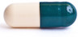

Лаборатория анализа данных Кукушкина Александра
Ищем новые знания в больших массивах информации. Решаем прикладные задачи, например, недавно для «Лук Эт Ми  » мы сделали подробное исследование рынка СМИ, для «Роструда
» мы сделали подробное исследование рынка СМИ, для «Роструда  » изучили конкурентов портала «Труд всем». Разнообразный анализ социальных сетей, предсказание оттока клиентов, рекомендательные системы — это всё к нам.
» изучили конкурентов портала «Труд всем». Разнообразный анализ социальных сетей, предсказание оттока клиентов, рекомендательные системы — это всё к нам.
Лаборатория сотрудничает с государством в области открытых данных и регулярно запускает небольшие общественно полезные сервисы:
«Где паркон?»
Карта маршрутов московских дорожных патрулей.
Средние зарплаты в резюме
Рациональный выбор зарплат для резюме и вакансий. Узнали много интересного о рынке труда в России.
Список предельных цен на жизненно необходимые лекарства 
Максимальные цены на ЖНВЛП в московских аптеках. Процесс составления списка представляет отдельный интерес.
«Москвоские школы»
Помощь в выборе школ для московских родителей. В ходе работы над проектом были собраны данные по ЕГЭ, вузам и кружкам.
Мы часто используем технологии собственной разработки:
Граф похожих сайтов
Помогает собрать список сайтов заданной тематики. Полезен для исследования рынка.
Граф связанных пабликов
Нужен для поиска конкурентов в социальных сетях.
Полуавтоматический классификатор сайтов
Позволяет быстро перейти от отдельных сайтов к тематическим группам.
Анализатор телефонных разговоров
Ускоряет работу колл-центров.
Поиск потенциальных фолловеров
Помогает проводить грамотные рекламные кампании в Твитере и наращивать аудиторию.
Поиск по слепку интернета
Для случаев, когда обычные поисковики не справляются.
Обычно схема сотрудничества устроена так: мы обсуждаем задачу в общих чертах, заключаем НДА, вникаем в задачу глубже, составляем план и назначаем срок, если всё устраивает, заключаем договор и начинаем работу. Длительность итерации почти никогда не превышает двух недель. Стоимость работ зависит только от срока.
Новости:
декабрь 2015
Первое место в конкурсе Билайна про предсказание контактов абонентов.
Опубликовано описание технологии поиска потенциальных фолловеров.
Первое место во всероссийском конкурсе по открытым данным.
ноябрь
Заняли первое место в хакатоне от Петамелон.
октябрь
Первое место во втором хакатоне по открытым данным.
сентябрь
Второе место в конкурсе Сбербанка про предсказание оттока.
Вынесен на обсуждение прототип «Карты дождей».
август
Мы заняли второе место в конкурсе на ДСВ 2015.
Опубликовано описание технологии поиска похожих пабликов.
июнь
Мы заняли первое место в первом хакатоне по открытым данным.